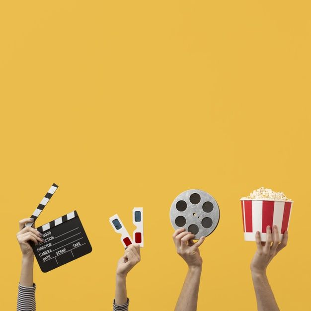

Web App Case Study
CinePeek
CinePeek is a movie and TV discovery web app built with Node.js, Express.js, and EJS. It was designed to make exploring content feel fast and enjoyable through genre filters, language selection, random picks, and a personal watchlist powered by the TMDb API.

Overview
The idea behind CinePeek was to build something that feels more dynamic than a static catalog. Instead of only listing movies, the app encourages exploration through filters and random suggestions while still giving users a simple way to save content they want to revisit.
Key Highlights
- Browse titles by genre and language to make discovery more personalized.
- Use random recommendations to create a more engaging browsing flow.
- Save favorites into a watchlist to support repeat use and user continuity.
- Render pages with EJS so the experience feels structured and fast to navigate.
Tech Stack
- Node.js
- Express.js
- EJS
- JavaScript
- HTML
- CSS
- TMDb API
What I learned
Connecting an external API to a user-friendly interface taught me how backend logic and
presentation work together to make a product feel complete.